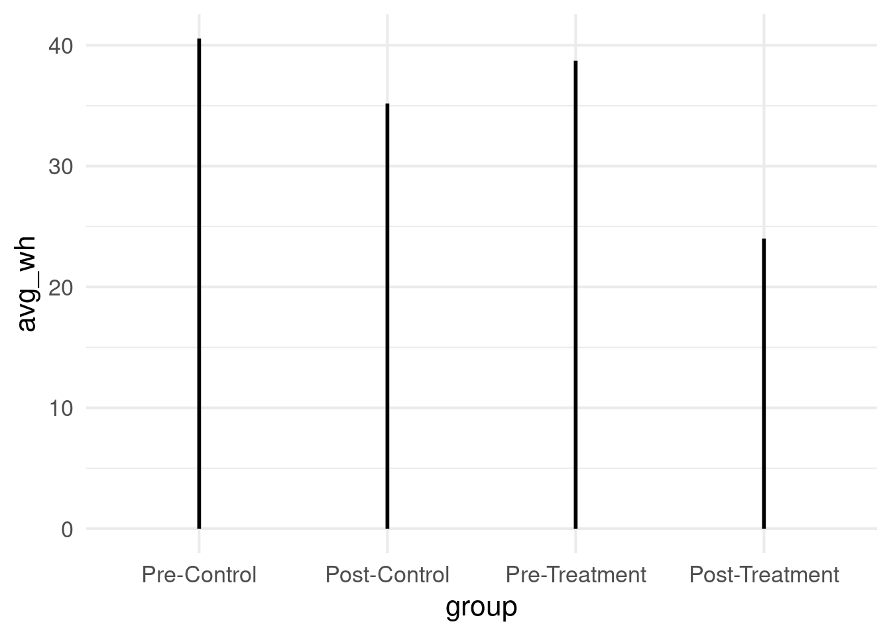
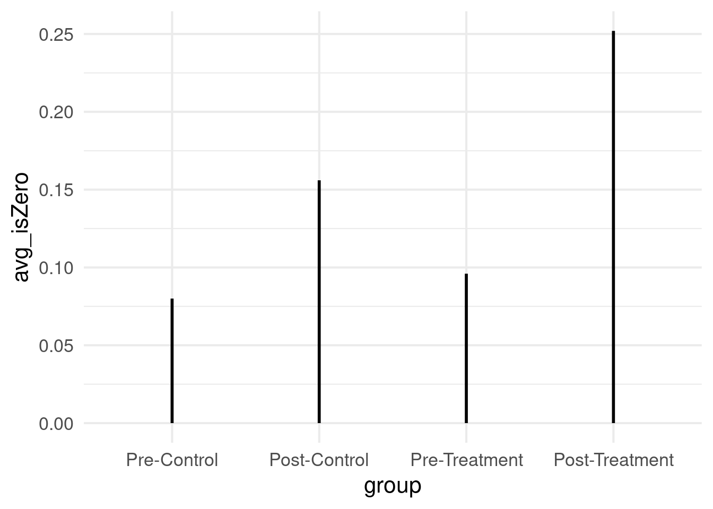

How to use hurdled lognormal likelihood to model outcomes in R?
Author
Suhishan Bhandari
Introduction
While working on a research project, I had to model total hours worked, which is a continuous metric that can be assumed to be normal, but with a sizable chunk of zeros as well. These values are all constrained to be positive because they are hours worked in the last 7 days. The problem is that in a standard OLS model, the outcome variable can take all possible real values, and even if I log the variable for positivity constraint, I am still left with the problem of modelling a sizable chunk of zeros that is expected when surveying people on their self-reported work hours.
Let’s look at this with an example. Here, I simulate 250 observations of work hours as a log normal process with 15% of these values being 0 hours worked.
N <-1e3#1e3 observationsd <-tibble(isZero =rbinom(N, 1, 0.15), #15% 0 observationswh =ifelse(isZero ==1, 0, rlnorm(N, 3.5, 0.4))) d %>%ggplot(aes(wh)) +geom_histogram(bins =40, fill ="skyblue2", color ="black")+labs(x ="Work Hours")
Using a log normal distribution with the mean of around exp(3.5), we get a distribution of work hours that matches closely with reality. As we can see, if we assume 15% of people surveyed to report 0 hours worked, we are now working with a symmetric distribution that is bounded to be greater than 0 but is zero-inflated. While zero-inflated models are common for binomial or poisson processes, it is much harder to find and model variables that are zero-inflated while being continuous.
Modelling
Let’s take a peek at our model. We are assuming that wh is log normally distributed, which means that log(wh) is normally distributed. The model contains two parts. The first is only for the values of not being zero, that is the mu part. The second hu intercept is for the probability of a zero.
The prior is normal(3, 0.5) because we assume before looking at the data that the log(wh) is normal and as such, the non-zero part of it is going to follow a normal distribution.
model_1 <-brm(data = d,family = hurdle_lognormal,bf(wh ~1, hu ~1),prior =c(prior(normal(3, 0.5), class = Intercept, lb =0),prior(normal(-1, 1), dpar ="hu", class = Intercept),prior(exponential(4), class = sigma) ),iter =2e3, warmup =1e3, chains =4, cores =4,sample_prior = T,file ="fits/model_1")
Suppose that average work hours differs by groups, may it be geographical or at different times. Think of a scenario of a treatment and a control, measure before and after certain labor market shock. Let’s assume two neighbouring districts A and B, whereby A experience war at time period t and B didn’t. Let’s assume we have data for A and B before the war occurred, and the data for work hours after the war occurred. Let’s assume the data is repeated cross section data. We can simulate it as follows:
a_0 <-3.7a_post <--0.05a_treat <--0.05a_pt <--0.2g <-tibble(post =rep(c(0, 1), each =500), # time period 0 is before and time period 1 is after.treat =rep(c(0, 1), times =500 ), # 0 is no-war, 1 is war.isZero =rbinom(N, 1, prob =0.1+0.07* post +#0.07 because of temporary immigration (0.03) * treat +0.1* (post * treat)),wh = (1- isZero) *rlnorm(N, a_0 + a_post * post + a_treat * treat + a_pt * (post * treat),sdlog =0.4))
4 groups:
1 : Post = 0, Treat = 0 2 : Post = 1, Treat = 1 3 : Post = 0, Treat = 1 4 : Post = 1, Treat = 1
g <- g %>%mutate(group =factor(1+ post +2* treat, labels =c("Pre-Control", "Post-Control","Pre-Treatment","Post-Treatment")))
Let’s look at what we simulated:
g %>%group_by(group) %>%summarize(avg_wh =mean(wh)) %>%ggplot(aes(x = group, y = avg_wh))+geom_linerange(aes(ymin =0, ymax = avg_wh),color ="black",linewidth =1)

g %>%group_by(group) %>%summarize(avg_isZero =mean(isZero)) %>%ggplot(aes(x = group, y = avg_isZero))+geom_linerange(aes(ymin =0, ymax = avg_isZero),color ="black",linewidth =1)

OLS Model
# A normal OLS model.ols_group <-lm(wh ~0+ group, data = g)summary(ols_group)
Call:
lm(formula = wh ~ 0 + group, data = g)
Residuals:
Min 1Q Median 3Q Max
-40.551 -12.019 0.033 11.217 106.025
Coefficients:
Estimate Std. Error t value Pr(>|t|)
groupPre-Control 40.551 1.314 30.86 <2e-16 ***
groupPost-Control 35.173 1.314 26.77 <2e-16 ***
groupPre-Treatment 38.717 1.314 29.47 <2e-16 ***
groupPost-Treatment 23.997 1.314 18.26 <2e-16 ***
---
Signif. codes: 0 '***' 0.001 '**' 0.01 '*' 0.05 '.' 0.1 ' ' 1
Residual standard error: 20.77 on 996 degrees of freedom
Multiple R-squared: 0.7424, Adjusted R-squared: 0.7414
F-statistic: 717.8 on 4 and 996 DF, p-value: < 2.2e-16
Because the mean also counts and includes zeros, everything is muddled in. It’s fine here where we can see that after the war, the war-trodden district both had lower work hours and more unemployment, but in cases where these two phenomena have different causes, or if war affects people in different ways, this analysis may lead us astray.